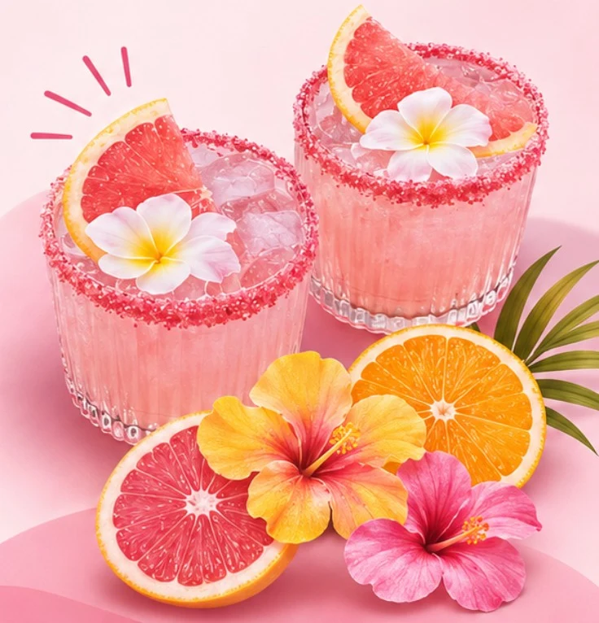
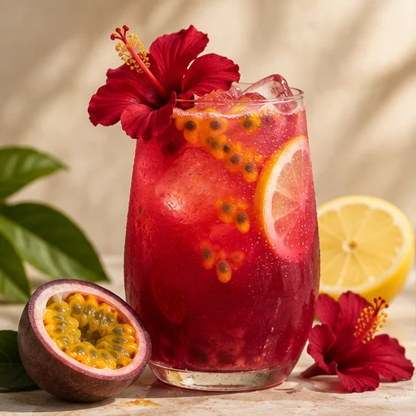

Seis propuestas de mocktails sin alcohol.

☼ CÓCTELES SIN ALCOHOL
SUNSET MOCKTAILS
Sabor, frescura y buena vibra.
Frutas tropicales, colores de atardecer y una razón más para brindar. Descubre nuestra propuesta de mocktails y disfruta cada momento a tu manera, sin alcohol.
FRUTA TROPICAL ✳ COLORES DEL ATARDECER ✳ BUENA VIBRA ✳ SIN ALCOHOL

01 / UNA IDEA DIFERENTEEL SABOR DE ELEGIR
Una nueva forma
de disfrutar.
Elige tus sabores.
Imagina tu combinación ideal.
¿Te gusta más la acidez del maracuyá o la dulzura del mango? En Crea tu Sunset puedes combinar una fruta, un complemento y un toque especial para imaginar un mocktail a tu gusto. Prueba distintas mezclas y descubre cuánto costaría cada una según nuestras reglas de ejemplo.
Crea tu combinación ↗TU IMAGINACIÓN, TU MEZCLA
Crea tu Sunset.
Elige tus ingredientes y descubre tu combinación ideal.
TU CREACIÓN
VISUALIZACIÓN ORIENTATIVA
Precio
Precio base: $3,00; presentación de 12 oz +$0,40; coco +$0,20; jengibre +$0,10. Las demás opciones no añaden costo.
UN SABOR PARA CADA MOMENTO
Nuestros mocktails.
Frutales, cítricos o con burbujas: explora nuestras seis propuestas y toca cada tarjeta para conocer sus ingredientes y detalles.
NUESTRA HISTORIA
Un atardecer
convertido en sabor.
Sunset Mocktails nace de una idea: crear bebidas especiales para disfrutar sin alcohol.
Pensamos en una marca inspirada en los colores del atardecer y en frutas como el maracuyá, la piña y el mango.
De esa mezcla salieron bebidas de colores vivos, nombres propios y presentaciones pensadas para compartir.
Nuestra propuesta invita a descubrir sabores nuevos y brindar por los buenos momentos.
☼
Que nunca falten
los buenos momentos.
01 / MISIÓN
Crear experiencias refrescantes mediante mocktails sin alcohol, combinando sabores tropicales, creatividad y presentaciones originales.
02 / VISIÓN
Convertirnos en una marca reconocida por ofrecer experiencias tropicales creativas y accesibles.
03 / VALORES
Creatividad · Frescura · Calidad · Alegría · Responsabilidad
DINERO SEGURO
Precios claros,
decisiones tranquilas.
Queremos que puedas revisar los ingredientes, el tamaño y el precio propuesto antes de elegir. Así es más fácil comparar las opciones y saber qué incluye cada bebida.
✓ Precios a la vista
✓ Ingredientes y tamaños de cada propuesta
✓ Sin cobros ni pedidos en línea
La página no recibe pagos ni pedidos.
DEL CONCEPTO A LA PROPUESTA
Conoce nuestra propuesta.
Sabores, ideas y detalles que dan vida a Sunset Mocktails.
Personas que podrían elegir bebidas sin alcohol para reuniones y celebraciones.
Precios entre $3,00 y $4,00 en el catálogo.
Juguerías, cafeterías y establecimientos con bebidas similares.
Jóvenes adultos y personas que buscan alternativas sin alcohol.
Ferias y eventos; pedidos, como posibilidad futura.
Fotografías y videos para redes, además de recomendaciones.
Personalización, identidad tropical y experiencia de marca.
HABLEMOS DE SABORES
¿Listo para tu
próximo atardecer?
¿Qué sabores combinarías para una reunión o un evento? Cuéntanos tu idea.
INSTITUCIÓN EDUCATIVA
Unidad Educativa Particular La Asunción
Campus Bicentenario UDA-Baños
Río Orinoco y Av. Ricardo Durán
Cuenca, Ecuador